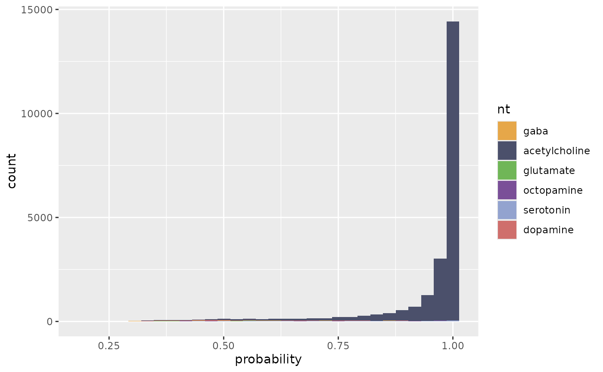
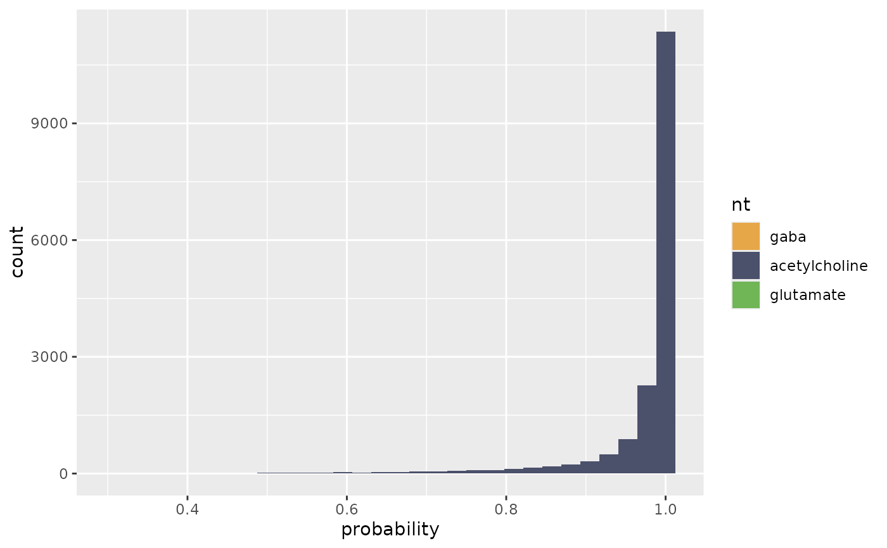
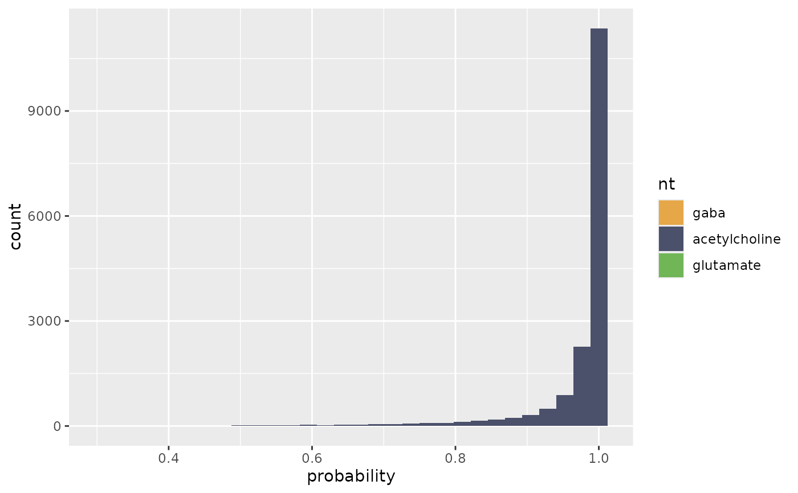

flywire_ntplot plots a ggplot2 histogram of predicted
neurotransmitter vs prediction probability.
flywire_ntplot3d makes a 3D plot of synapse location
Usage
flywire_ntplot(
x,
nts = c("gaba", "acetylcholine", "glutamate", "octopamine", "serotonin", "dopamine",
"neither"),
cleft.threshold = 0,
local = NULL,
cloudvolume.url = NULL
)
flywire_ntplot3d(
x,
nts = c("gaba", "acetylcholine", "glutamate", "octopamine", "serotonin", "dopamine"),
plot = c("points", "spheres"),
cleft.threshold = 0,
local = NULL,
cloudvolume.url = NULL,
...
)Arguments
- x
A flywire rootid or a data.frame of neurotransmitter predictions returned by
flywire_ntpred- nts
A character vector of neurotransmitters to include in the plot (default all 6)
- cleft.threshold
A threshold for the cleft score calculated by Buhmann et al 2019 (default 0, we have used 30-100 to increase specificity)
- local
path to SQLite synapse data. Evaluated by
fafbseg:::local_or_google. Work in progress. Default is to download this data and place it in~/projects/JanFunke.- cloudvolume.url
The segmentation source URL for cloudvolume. Normally you can ignore this and rely on the default segmentation chosen by
choose_segmentation- plot
Whether to plot points or spheres ("points" with
size=5works quite well)- ...
additional arguments passed to
spheres3dorpoints3d
Value
flywire_ntplot returns a ggplot2::ggplot object
that can be further customised to modify the plot (see examples).
See also
Other automatic-synapses:
flywire_adjacency_matrix(),
flywire_neurons_add_synapses(),
flywire_ntpred(),
flywire_partners()
Examples
# \donttest{
# a cholinergic olfactory projection neuron
ntp=flywire_ntpred("720575940615237849")
#> Warning: /home/runner/projects/JanFunke//flywire_synapses.db does not exist
#> Warning: /home/runner/projects/JanFunke//20191211_fafbv14_buhmann2019_li20190805_nt20201223.db does not exist
flywire_ntplot(ntp)
#> `stat_bin()` using `bins = 30`. Pick better value with `binwidth`.

flywire_ntplot(ntp, nts=c("gaba", "acetylcholine", "glutamate"))
#> `stat_bin()` using `bins = 30`. Pick better value with `binwidth`.
 flywire_ntplot(ntp, nts=c("gaba", "acetylcholine", "glutamate"), cleft.threshold=100)
#> `stat_bin()` using `bins = 30`. Pick better value with `binwidth`.

# ids for several Kenyon cells
kcsel=c("720575940623755722", "720575940609992371", "720575940625494549",
"720575940619442047", "720575940620517656", "720575940609793429",
"720575940617265029", "720575940631869024", "720575940637441955",
"720575940638892789")
kcpreds=flywire_ntpred(kcsel)
#> Warning: /home/runner/projects/JanFunke//flywire_synapses.db does not exist
#> Warning: /home/runner/projects/JanFunke//20191211_fafbv14_buhmann2019_li20190805_nt20201223.db does not exist
# collect the ggplot object
p <- flywire_ntplot(kcpreds)
# print it to see the aggregate plot (all neurons together)
p
#> `stat_bin()` using `bins = 30`. Pick better value with `binwidth`.
# ... or use ggplot facets to separate by query neuron
p+ggplot2::facet_wrap(query~.)
#> `stat_bin()` using `bins = 30`. Pick better value with `binwidth`.
# }
if (FALSE) {
flywire_ntplot3d(ntp, nts=c("gaba", "acetylcholine",
"glutamate"), plot='points', cleft.threshold=30, size=5)
}
flywire_ntplot(ntp, nts=c("gaba", "acetylcholine", "glutamate"), cleft.threshold=100)
#> `stat_bin()` using `bins = 30`. Pick better value with `binwidth`.

# ids for several Kenyon cells
kcsel=c("720575940623755722", "720575940609992371", "720575940625494549",
"720575940619442047", "720575940620517656", "720575940609793429",
"720575940617265029", "720575940631869024", "720575940637441955",
"720575940638892789")
kcpreds=flywire_ntpred(kcsel)
#> Warning: /home/runner/projects/JanFunke//flywire_synapses.db does not exist
#> Warning: /home/runner/projects/JanFunke//20191211_fafbv14_buhmann2019_li20190805_nt20201223.db does not exist
# collect the ggplot object
p <- flywire_ntplot(kcpreds)
# print it to see the aggregate plot (all neurons together)
p
#> `stat_bin()` using `bins = 30`. Pick better value with `binwidth`.
# ... or use ggplot facets to separate by query neuron
p+ggplot2::facet_wrap(query~.)
#> `stat_bin()` using `bins = 30`. Pick better value with `binwidth`.
# }
if (FALSE) {
flywire_ntplot3d(ntp, nts=c("gaba", "acetylcholine",
"glutamate"), plot='points', cleft.threshold=30, size=5)
}